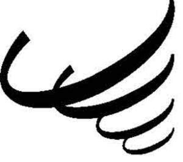

Trade Mark Journal No.2025/040 3 October 2025
UK00004267798 22 September 2025 (18,21,25,35,41,43)
Mark 1
Mark 2

- Class 18
- Trunks and travelling bags; rucksacks; backpacks; bags; beach bags; belts; briefcases; card cases; cases; garment cases for travel; handbags; holdalls; key cases; keyholders; purses; school bags; shopping bags; sports bags; suitcases; wallets; umbrellas, parasols and walking sticks; collars, leashes and clothing for animals; covers for animals; parts and fittings for all the aforesaid goods.
- Class 21
- Mugs; cups; beakers; plates; bowls; drinking glasses; lunchboxes; flasks and hip flasks; bottles; glasses [receptacles]; tankards; money boxes; water bottles; bottle openers; corkscrews; parts and fittings for all the aforesaid goods.
- Class 25
- Clothing; footwear; headgear; sports clothing; sports footwear; sports headgear; outerwear; swimwear; socks; underwear; boots; shoes; caps; hats; beanie hats; baseball caps; garments for protecting clothing; shorts; gloves; training kit and shirts; coats; jackets; T-shirts; sweaters; tracksuits; pants; leggings; sleepwear; pyjamas; dressing gowns; trousers; jeans; replica sports kits; clothing belts; parts and fittings for the aforesaid goods.
- Class 35
- Retail services and online retail services connected with the sale of trunks and travelling bags, rucksacks, backpacks, bags, beach bags, belts, briefcases, card cases, cases, garment cases for travel, handbags, holdalls, key cases, keyholders, purses, school bags, shopping bags, sports bags, suitcases, wallets, umbrellas, parasols and walking sticks, collars, leashes and clothing for animals, covers for animals, mugs, cups, beakers, plates, bowls, drinking glasses, lunchboxes, flasks and hip flasks, bottles, glasses [receptacles], tankards, money boxes, water bottles, bottle openers, corkscrews, clothing, footwear, headgear, sports clothing, sports footwear, sports headgear, outerwear, swimwear, socks, underwear, boots, shoes, caps, hats, beanie hats, baseball caps, garments for protecting clothing, shorts, gloves, training kit and shirts, coats, jackets, T-shirts, sweaters, tracksuits, pants, leggings, sleepwear, pyjamas, dressing gowns, trousers, jeans, replica sports kits, clothing belts, sports apparatus and equipment, footballs, shin guards, football gloves; advisory, consultancy and information services relating to the aforesaid services.
- Class 41
- Education; providing of training; entertainment; sporting and cultural activities; arranging for ticket reservations for sports events; sports facilities (hire of -); sports facilities (leasing of -); provision of leisure facilities; club services (entertainment or education); coaching (training); sports coaching (training); on-line publication of electronic books and journals; providing on-line electronic publications, not downloadable; organisation of competitions; organisation of sports competitions; arranging and conducting of sports events for charitable purposes; personal trainer services; physical education; practical training (demonstration); sport camp services; providing sports facilities; rental of sports equipment; rental of sports grounds; rental of stadium facilities; advisory, consultancy and information services relating to the aforesaid services.
- Class 43
- Services for providing food and drink; rental of meeting rooms; provision of facilities for conventions; bar services; café services; cafeteria services; canteen services; carvery restaurant services; catering services; coffee shop services; contract food services; fast-food restaurant services; food and drink catering; food preparation services; preparation of food and drink; restaurant services; self-service restaurant services; snack-bar services; take-away food services; reservation services for booking meals; advisory, consultancy and information services relating to the aforesaid services.
Tornadoes Sports Education and Leisure
Representative: Addleshaw Goddard LLP